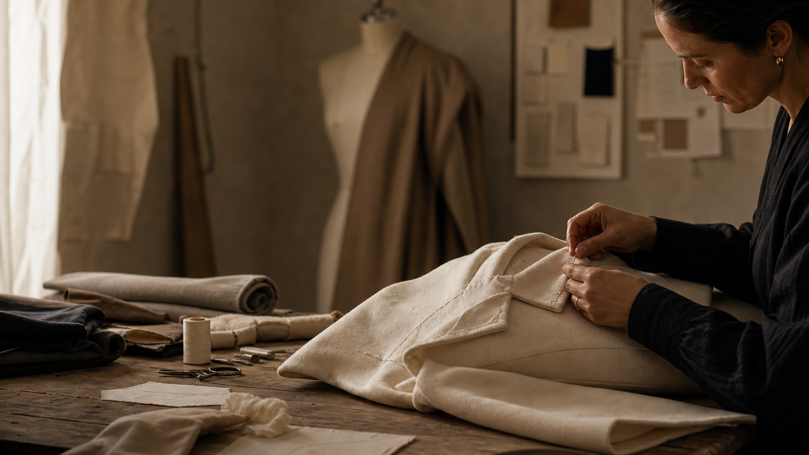

Slow Fashion
Timeless pieces. Thoughtfully made.
The Seasonal Edit
Curated garments, artisan stories, and timeless design for a slower approach to fashion.
Timeless pieces. Thoughtfully made.
Honoring craft and tradition.
Exclusive drops. Rare finds.
Ethical today. Essential forever.
Featured Collections
Three edits shaped around longevity, material depth, and a quieter kind of luxury.
View Collections
The Thread
A closer look at the quiet hours, precise fittings, and hand-worked details behind garments designed to hold their shape long after a season ends.
Shop The Look
A layered seasonal look with refined essentials selected for quiet repetition.
View The EditLimited Seasonal Edit